2. Introduction
This manual is designed to familiarize you with the Berkeley Nucleonics Model 508 pulse generator and is arranged so that you can easily find the information for which you are looking. Generally, each topic has its own section and no section assumes that you have read anything else in the manual.
Technical Support
For questions or comments about operating the Model 508 our technical staff can be reached via one of the following methods:
- Phone: (415) 453-9955
- Fax: (415) 453-9956
- Online: www.berkeleynucleonics.com
Warranty
Warranty is 1 Year standard, unless otherwise specified. Materials and workmanship, return to manufacturer included. Berkeley Nucleonics will replace any defective unit. Contact us for information on obtaining warranty service.
Package Contents
The box you receive should contain the following:
- Model 508 Pulse Generator
- AC Power Cord
- Accessories
- Arm Switch Keys (qty 2)
- 50 Ohm Interlock Shorting Jumper (BNC)
- Disc that includes
- Operating Manual
- Software Drivers
- Communication Software
Contact Berkeley Nucleonics at (415)-453-9955 if any parts are missing.
3. Safety Issues
Normal use of equipment exposes users to a certain amount of danger from electrical shock because testing must be performed where exposed voltage is present. An electrical shock causing 10 milliamps of current to pass through the heart will stop most human heartbeats. Voltages as low as 35 V (DC or RMS AC) should also be considered dangerous and hazardous since they can produce a lethal current under certain conditions. Higher voltages pose an even greater threat because such voltage can more easily produce a lethal current. Your normal work habits should include all accepted practices that will prevent contact with exposed high voltage, and those that will steer current away from your heart in case of accidental contact with a high voltage. You will significantly reduce the risk factor if you know and observe the following safety precautions:
- Familiarize yourself with the equipment. If possible, familiarize yourself with the equipment being tested and the location of its high-voltage points. However, remember that high voltage may appear at unexpected points in defective equipment.
- Do not expose high voltage components needlessly. Remove housings and covers only when necessary. Turn off equipment while making test connections in high-voltage circuits. Discharge high-voltage capacitors after removing power.
- Use insulated surfaces. Use an insulated floor material or a large, insulated floor mat to stand on, and an insulated work surface on which to place equipment. Make certain such surfaces are not damp or wet.
- One hand in the pocket. Use the time-proven one hand in the pocket technique while handling an instrument probe. Be particularly careful to avoid contacting a nearby metal object that could provide a good ground return path.
- AC powered equipment. When testing AC powered equipment, remember that AC line voltage is usually present on some power input circuits, such as the on-off switch, fuses, power transformer etc., and any time the equipment is connected to an AC outlet, even if the equipment is turned off.
- Never work alone. Someone should always be nearby to render aid if necessary. Training in CPR first aid is highly recommended.
4. Product Overview
The Model 508 combines industry leading BNC digital delay methodologies along with high capacity charge banks to generate precisely timed adjustable amplitude current pulses. This ability to generate highly precise current pulses makes this unit ideal for applications that require a high level of accuracy and repeatability.
Key Features
- Up to 4 individual outputs. With fully individual programming and control.
- Up to 6A output per channel (Standard Instrument).
- Complete channel and system setup stored in memory. Provides 12 memory storage slots.
- Remote programmability RS232, USB and Ethernet.
- Front and rear external trigger inputs.
Advanced Features / Options
- Resistance measurement (4 wire). For each channel with pre and post pulse testing features.
- Current and voltage monitor outputs.
- Front and rear sync outputs.
- Safety features. Including remote interlock and removable keyed enable switch.
5. Pulse Generator Concepts and Operation
System Timer Functions
Burst Mode
The System Timer functions as a non-retriggerable, multi-vibrator T0 pulse generator in Burst mode. This means that once started the timer will produce pulses continuously at the specified rate until the highest channel burst count is reached. Before pulses can be generated, the timer must be armed and then receive a System Start pulse. Arming the counter is done by pressing the RUN/STOP key. With external trigger disabled, the RUN/STOP key or a software trigger command may be used to generate the System Start pulse for the counter. With external trigger enabled, the RUN/STOP key or software trigger command arms the unit and the subsequent external trigger pulses replace the T0 pulses.
Single Shot Mode
In Single Shot mode, the System Timer is bypassed and the T0 pulse is generated directly from the System Start pulse.
The T0 pulses are distributed to the Channel Start input of all of the Channel Timers.
Channel Timer Functions
The Channel Timer functions as a non-retriggerable, delayed, one shot pulse generator. This means that the timer will only generate one delayed pulse for every Channel Start pulse received. Once the channel timer has started counting, additional start pulses will be ignored until the pulse has been completed (non-retriggerable). The Channel Start pulse for each channel is provided by the internal T0 pulse.
Whether or not a pulse is generated for each T0 pulse is determined by the channel enable setting. Pulses are defined by a time delay, from their sync or start pulse to the active edge, a time width over which the pulse is active, and an amplitude during the active portion of the pulse.
Navigating the Model 508 Front Panel
Selecting Menus
Parameters are grouped in menus, selectable using the function keys. To select the output channel parameters, press the letter key corresponding to the desired channel. To select other menus, including the channel test menus, press the FUNC key and then the key corresponding to the desired function.
Menus may include a number of different pages, with each page containing up to four adjustable parameters or state variables. The status block in the upper-left corner of the display shows a vertical arrow if the current menu contains additional pages. To select the next page, press the channel button again or select the same menu pressing the FUNC key and the channel/menu key again.
Selecting Menu Items
Within a menu, the blinking cursor indicates the current menu item for editing. The NEXT key will select a different adjustable menu item.
Numeric Input Mode
When the current item is numeric, the system enters the Numeric Input Mode. In this mode data may be edited in one of two ways:
- Arrow Keypad. The Left and Right arrow keys are used to select a digit to edit. The selected digit blinks to identify itself as the active digit. The Up and Down arrow keys are then used to increment or decrement this digit.
- Numeric Keypad. Enter the number, including decimal point using the numeric keypad. Complete the number using the ENTER key. Errors may be corrected using the backspace key or to start over press the clear key (CLR). Pressing the CLR key a second time will exit the numeric keypad mode and restore the original number.
Entering Non-Numeric Parameters
When the current item is non-numeric, the Up and Down arrow keys are used to select among different options for the parameter.
Alphanumeric Input Mode
When the current item is alphanumeric, the system enters the Alphanumeric Input Mode. In this mode, data is entered using the alphanumeric keypad. Pressing a key will display the first letter shown on the keypad. Repeated key presses will toggle through all the letters, both upper and lower case, shown on the key cap. To enter two letters which appear on the same key cap, select the first character, then use the right arrow to shift to the next position and enter the next letter. The Left and Right arrow keys may be used to position the cursor to edit any character. When data entry is complete, the ENTER key must be pressed. The keys contain the following characters:
| Key | Characters |
|---|---|
| 1 | 1 2 3 4 5 6 7 8 9 0 |
| 2 | A B C a b c 2 |
| 3 | D E F d e f 3 |
| 4 | G H I g h i 4 |
| 5 | J K L j k l 5 |
| 6 | M N O m n o 6 |
| 7 | P Q R S p q r s 7 |
| 8 | T U V t u v 8 |
| 9 | W X Y Z w x y z 9 |
| 0 | 0 1 2 3 4 5 6 7 8 9 |
| . | . , # $ % & ? |
| - | - + * / space |
Enabling System Output
The RUN/STOP key is used to arm the system. With external trigger disabled, the key will arm and start pulse output. With external trigger enabled, the key will arm the pulse generator. Pulse output then starts after the first valid trigger input. With external trigger enabled, pressing the RUN/STOP key a second time disables the pulse generator.
6. Front Panel Overview
Model 508 Display
Display Layout and Indicators
A graphical display module displays parameters and status information. The status information is located in the upper-left corner of the display, between the two brackets. There are three enunciators:
- Vertical Arrow. Indicates there are additional pages to the current menu.
- Blinking Circle. Indicates the unit is actively generating pulses, or armed and waiting for an external trigger.
- Musical Note. Indicates the function key has been pressed.
The upper-right side of the display contains the title of the currently displayed menu. The rest of the display is used for system parameters. The display brightness may be adjusted, allowing the instrument to be used under various lighting conditions.
Description of Front Panel Area
Keypads and Keys
Four keypads provide fast access to various menus and easy editing of system parameters.
- Channel Keys. Provides one touch access to the desired channel menu for setting up the channel parameters. The channel menu keys are indicated with a capital letter corresponding to the channel (e.g. press the A key to display the menu corresponding to channel A). The FUNC key (solid yellow key at the bottom center of the numeric keypad) allows the channel keys to select the channel test menus.
- Trigger Key. Provides one touch access to the trigger menu for setting up trigger parameters. The trigger menu key is indicated with the letters TRIG.
- Arrow Keypad. The up and down arrows (referred to as UP and DOWN keys for the rest of this document) are used to increment/decrement the current parameter (indicated by the blinking cursor). The position of the cursor controls the step size for each increment. The right and left arrows (referred to as LEFT and RIGHT keys for the rest of this document) move the cursor to different positions within the current parameter. The NEXT key selects the next parameter in the currently displayed menu.
- Numeric Keypad. Allows numbers and alphanumeric values to be entered. When entering alphanumeric values, pressing a key will display the first letter shown on the key. Repeated key presses will toggle through all the letters, both upper and lower case, shown on the keycap. To enter two letters which appear on the same keycap, select the first character, then use the right arrow to shift to the next position and enter the next letter. When data entry is complete the ENTER key must be pressed. The FUNC key allows a key to select the secondary function/menu in yellow directly above the key.
Second Level Menus (Function Key)
The second level menus (indicated in yellow above certain keys) are accessed through the use of the yellow FUNC key. Pressing the FUNC key once and then pressing the desired menu key will display the specified second level menu. Pressing the FUNC key twice in succession will put the unit into Function Lock mode, where the second level menus can be accessed without repeatedly pressing the FUNC key. Pressing the FUNC key a third time will exit Function Lock mode.
Channel Outputs (BNC Connectors)
Each channel has two outputs on the front panel:
- Voltage Monitor. This is an analog representation in volts of the voltage output to the load. The transfer function of this follower is 0.2 V/V, as listed directly below the monitor BNC connector.
- Current Monitor. This is an analog representation in volts of the current output to the load. The transfer function of this follower is 0.5 V/A, as listed directly above the monitor BNC connector.
The outputs of the voltage and current monitors are optically isolated and have a typical 1us delay.
Channel Status LED Indicators
Each channel has four panel LED indicators and one button led indicator to reflect the current status of the channel:
- ARMED Green LED indicating the channel is armed and ready.
- CHARGE READY Amber LED indicating the channel capacitor bank is charged and ready.
- RESISTOR FAULT Red LED indicating the pre test error status of the current channel.
- GROUND FAULT Red LED indicating the pre test error status of the current channel.
- Channel Button Green LED back illuminating button text when the channel is enabled.
Arm Switch (Keyed)
The upper right hand corner of the front panel contains a safety Arm Switch which may be turned to the STANDBY position while changing parameters to ensure no pulses are generated. This switch must be in the ARM position in order to allow generation of pulses.
System Status LED Indicators
The system state has two front panel LED indicators to reflect the current system state:
- Power Green LED back illuminating button text when system is powered on.
- ARM Red LED indicating the system arm keyswitch is in the Arm position.
- Trigger Green LED back illuminating button text when the global system trigger is enabled.
- Run Green LED back illuminating button text while system is pulsing or ready to trigger.
Front Sync Output
The front panel sync output is user selectable to output the TTL representation of the system pulse or any of the individual channels. This output may also be disabled.
Front Trigger Input
The front panel trigger input is user selectable as the source for the global system trigger.
7. Rear Panel Overview
Description of Rear Panel Area
Channel Connections (Banana Jacks)
Each channel has two sets of banana jacks for connecting to the device under test:
- OUTPUT Red and Black current jacks (labeled A between them) connect to the positive and negative drive terminals (respectively) of the device under test.
- MEASURE Red and Black voltage sense jacks (labeled V between them) connect to the positive and negative measurement terminals (respectively) of the device under test. This connection is optional when pre and/or post resistance tests are not enabled.
Rear Sync Output
The rear panel sync output is user selectable to output the TTL representation of the system pulse or any of the individual channels. This output may also be disabled.
Rear Trigger Input
The rear panel trigger input is user selectable as the source for the global system trigger.
Interlock Short
This is a protection jumper required for system or channels to enable or arm. It is labeled INTLK on the rear panel overlay. A bypass shorting jumper is included with the instrument when shipped.
Communication Ports
This instrument ships with RS232 and USB communications installed. An option to include Ethernet may be specified at the time the order is placed. The rear panel overlay labels for the communications connections are RS232, USB, and ETHERNET respectively.
Voltage Input (AC)
A switched and fused AC input connection is located on the rear panel along with markings indicating the required voltage and maximum current draw.
Cooling Fans
The rear panel also contains one or two cooling fan outputs depending on whether the instrument has two or four channels respectively. Air is circulated in through the rear panel and out through the side panel openings.
8. Menu Structure
MODE Menu (FUNC + 1)
| Page | Line | Content |
|---|---|---|
| Page0 | Line0 | empty |
| Page0 | Line1 | Mode: Single Shot, Burst |
| Page0 | Line2 | empty |
| Page0 | Line3 | empty |
Setting System Mode Parameters
- Mode: Selects the T0 mode: Single Shot or Burst mode.
RATE Menu (FUNC + 4)
| Page | Line | Content |
|---|---|---|
| Page0 | Line0 | empty |
| Page0 | Line1 | empty |
| Page0 | Line2 | Per: <period> |
| Page0 | Line3 | decimal place indicator |
Setting System Rate Parameters
- Per: Sets the T0 period which determines the burst mode output frequency of the unit.
Channel Menu (A, B, C, or D)
| Page | Line | Content |
|---|---|---|
| Page0 | Line0 | Channel: Enabled, Disabled |
| Page0 | Line1 | Wid: <width> |
| Page0 | Line2 | Dly: <delay> |
| Page0 | Line3 | decimal place indicator |
| Page1 | Line0 | Enable: Enabled, Disabled |
| Page1 | Line1 | empty |
| Page1 | Line2 | Brst: <burst> |
| Page1 | Line3 | Ampl: <amplitude> |
Setting Channel Output Parameters
- Enable. Enables or disables the channel for pulsing.
- Wid: Sets the channel pulsewidth.
- Dly: Sets the channel delay until active edge.
- Brst: Sets the burst count for the channel. When system is in Single Shot mode, this parameter will display (Disabled) and not be adjustable.
- Ampl: Sets the amplitude of the output current pulse.
- Offs: Sets the amplitude offset of the output current pulse.
Channel Test Menu (FUNC + A, B, C, or D)
| Page | Line | Content |
|---|---|---|
| Page0 | Line0 | empty |
| Page0 | Line1 | PreTest: Disabled |
| Page0 | Line2 | empty |
| Page0 | Line3 | empty |
| Page0 - Alt | Line0 | empty |
| Page0 - Alt | Line1 | PreTest: Enabled |
| Page0 - Alt | Line2 | PreMeas: measured resistance |
| Page0 - Alt | Line3 | empty |
| Page1 | (Only available when PreTest is Enabled) | |
| Page1 | Line0 | empty |
| Page1 | Line1 | PreMax: <pretest maximum resistance> |
| Page1 | Line2 | PreMin: <pretest minimum resistance> |
| Page1 | Line3 | IPreMax: <pretest measurement current> |
Setting Channel Pre-Test Parameters
- PreTest: Enables or disables pre resistance test and requirements for the channel.
- PreMeas: Displays the measured resistance from the last run pre-test.
- PreMax: Sets the maximum resistance allowable for pulse generation.
- PreMin: Sets the minimum resistance allowable for pulse generation.
- IPreMax: Sets the test current for measuring the resistance.
| Page | Line | Content |
|---|---|---|
| Page2 | Line0 | empty |
| Page2 | Line1 | PostTest: Disabled |
| Page2 | Line2 | empty |
| Page2 | Line3 | empty |
| Page2 - Alt | Line0 | empty |
| Page2 - Alt | Line1 | PostTest: Enabled |
| Page2 - Alt | Line2 | PstMeas: measured resistance |
| Page2 - Alt | Line3 | TstType: Standard, Outside, Outside Pre |
| Page3 | (Only available when PostTest is Enabled) | |
| Page3 | Line0 | empty |
| Page3 | Line1 | PstMax: <post-test maximum resistance> |
| Page3 | Line2 | PstMin: <post-test minimum resistance> |
| Page3 | Line3 | IPstMax: <maximum test current> |
Setting Channel Post-Test Parameters
- PstTest: Enables or disables post resistance test and requirements for the channel.
- PstMeas: Displays the measured resistance from the last run post-test.
- TstType: Sets the type of test for determining pass/fail condition of the Post Test. The types are as follows:
- Standard. Indicates Ground Fault if PstMeas is less than PstMin and Resistance Range Error if above PstMax if PstMax is enabled.
- Outside. Indicates Resistance Range Error if PstMeas is between PstMin and PstMax.
- Outside Pre. Indicates Resistance Range Error if PstMeas is between PreMin and PreMax.
- PstMax: Sets the maximum resistance allowable to consider a post-test as passed. (May be disabled by setting to 0 through the command interface.)
- PstMin: Sets the minimum resistance allowable to consider a post-test as passed.
- IPstMax: Sets the maximum test current for measuring the resistance.
TRIG Menu (TRIG)
| Page | Line | Content |
|---|---|---|
| Page0 | Line0 | empty |
| Page0 | Line1 | Mode: Disabled |
| Page0 | Line2 | empty |
| Page0 | Line3 | empty |
| Page0 - Alt | Line0 | empty |
| Page0 - Alt | Line1 | Mode: Enabled |
| Page0 - Alt | Line2 | Level: <trigger threshold level> |
| Page0 - Alt | Line3 | Edge: <trigger edge> |
| Page1 | Line0 | empty |
| Page1 | Line1 | Filter: Disabled |
| Page1 | Line2 | empty |
| Page1 | Line3 | Source: Front Input, Rear Input |
| Page1 - Alt | Line0 | empty |
| Page1 - Alt | Line1 | Filter: Enabled |
| Page1 - Alt | Line2 | MinWid: <minimum trigger pulse width> |
| Page1 - Alt | Line3 | Source: Front Input, Rear Input |
Setting Trigger Parameters
- Mode: Enables or disables external trigger operation.
- Level: Sets the trigger threshold level.
- Edge: Sets the triggering edge to rising or falling.
- Filter: Enables or disables minimum trigger pulse width filtering.
- MinWid: Sets the minimum allowable trigger pulse width.
- Source: Sets the trigger input source to front panel or rear panel.
Counter Menu (FUNC + 8)
| Page | Line | Content |
|---|---|---|
| Page0 | Line0 | empty |
| Page0 | Line1 | Counter: Disabled, Enabled |
| Page0 | Line2 | Counts: system pulse count since reset |
| Page0 | Line3 | CLR to zero counter. |
Setting Counter Parameters
- Counter: Enables or disables the T0 pulse counter.
- Counts: Returns the current value of the counter.
- CLR: Pressing the CLR while in the Counter menu will reset the Counts value to 0.
SYSTEM Menu (FUNC + 3)
| Page | Line | Content |
|---|---|---|
| Page0 | Line0 | empty |
| Page0 | Line1 | Front Sync: Disabled, T0, ChA, ChB, (ChC, ChD) |
| Page0 | Line2 | Rear Sync: Disabled, T0, ChA, ChB, (ChC, ChD) |
| Page0 | Line3 | empty |
| Page1 | Line0 | empty |
| Page1 | Line1 | Interface: RS232 |
| Page1 | Line2 | Baud Rate: <RS232 baud rate> |
| Page1 | Line3 | Echo: <RS232 echo> |
| Page1 - Alt | Line0 | empty |
| Page1 - Alt | Line1 | Interface: USB |
| Page1 - Alt | Line2 | empty |
| Page1 - Alt | Line3 | empty |
| Page1 - Alt | Line0 | empty |
| Page1 - Alt | Line1 | Interface: Ethernet |
| Page1 - Alt | Line2 | empty |
| Page1 - Alt | Line3 | empty |
| Page2 | Line0 | empty |
| Page2 | Line1 | Key Rate: <key rate> |
| Page2 | Line2 | Key Vol: <key volume> |
| Page2 | Line3 | empty |
| Page3 | Line0 | empty |
| Page3 | Line1 | Mark: <decimal point indicator> |
| Page3 | Line2 | LCD: <LCD brightness> |
| Page3 | Line3 | empty |
Setting System Parameters
- Front Sync: Sets the source of the front panel sync output signal set to the front panel. Choices are Disabled, T0, ChA, and ChB for two channel instruments, with ChC and ChD added for four channel instruments.
- Rear Sync: Sets the source of the rear panel sync output signal set to the front panel. Choices are Disabled, T0, ChA, and ChB for two channel instruments, with ChC and ChD added for four channel instruments.
- Interface: Selects through the installed interfaces and allows adjustments of appropriate parameters.
- Baud Rate: Sets the baud rate for the RS232 communications port.
- Echo: Enables or disables command echoing for the RS232 communications port.
- Key Rate: Sets the key repeat rate (useful for modifying the rate at which parameters adjust).
- Key Vol: Sets the perceived key beep volume by adjusting the beep time.
- Mark: Sets which character, either a , or a . , to use as a decimal point indicator.
STORE Menu (FUNC + 6)
| Page | Line | Content |
|---|---|---|
| Page0 | Line0 | empty |
| Page0 | Line1 | Store#: <configuration# 1-12> |
| Page0 | Line2 | Name: <configuration name> |
| Page0 | Line3 | empty |
Setting Store Parameters
- Store#: Sets which user bin to store the current instrument setup.
- Name: Allows the user to rename the user bin.
RECALL Menu (FUNC + 9)
| Page | Line | Content |
|---|---|---|
| Page0 | Line0 | empty |
| Page0 | Line1 | Recall#: <configuration# 0-12> |
| Page0 | Line2 | empty: configuration # |
| Page0 | Line3 | empty |
Setting Recall Parameters
- Recall#: Sets which user bin to recall.
- Level: Displays the name of the selected user bin.
9. Operating Instructions
Quick Start: Internal Single Shot Generator Operation
Although the Model 508 has a powerful set of feature extensions that allow the user to cater it to many unique test setups, the following steps may be followed to quickly generate a single shot internally generated pulse. Starting from the default settings, which can be recalled by recalling configuration 0, the following parameters need to be set:
- Pulse Width, Delay. Enter the Channel menus by pressing the appropriate channel key. Enter the required pulse width and delay. Repeat for each output channel.
- Amplitude. Enter the channel menus as specified in the previous step. Press the channel menu an additional time to display the second parameter page. Enter the desired current amplitude. Repeat for each output channel.
- Enable. Enter the channel menus as specified in the previous step. Use the up arrow key to change the first line of the display to read Enabled. Repeat for each output channel.
- Interlock. Make sure the Safety Interlock on the rear panel is shorted with either a setup specific safety connection or the 50 Ohm interlock bypass (shipped with the instrument accessories).
- Wait for Charge. When the Safety Interlock is properly shorted the instrument will charge up the capacitor banks for each channel (regardless of whether the channel is enabled or not). When the channel CHARGE READY LEDs become illuminated, proceed to the next step.
- ARM Key Switch. Turn the Arm Key Switch to the ARM position. If the system ARM LED or the desired channel ARMED LEDs do not illuminate, the previous two steps need to be revisited.
- Start. Press the RUN/STOP key to generate a single pulse for each enabled channel.
Quick Start: Single Shot External Trigger Operation
To generate a single pulse for single external trigger event, based on the default configuration 0, the following parameters need to be set:
- Trig. Enter the trigger menu by pressing the TRIG key. Change mode to Enabled.
- Level. Press the NEXT key to select the trigger threshold voltage parameter. Adjust to approximately 50% of the trigger signal amplitude.
- Edge. Press the NEXT key to select the Edge parameter. Set the instrument to trigger off the rising edge or falling edge as desired.
- Filter. Press the TRIG key to select the next page. Select the filter to be enabled or disabled. If enabled, press the NEXT key to select the filter width. Adjust the filter width to be shorter that the external trigger pulse width but longer than any errant pulses.
- Source. Press the NEXT key to select the trigger source. Select either front or rear input.
- Pulse Width, Delay. Enter the Channel menus by pressing the appropriate channel key. Enter the required pulse width and delay. Repeat for each output channel.
- Amplitude. Enter the channel menus as specified in the previous step. Press the channel menu an additional time to display the second parameter page. Enter the desired current amplitude. Repeat for each output channel.
- Enable. Enter the channel menus as specified in the previous step. Use the up arrow key to change the first line of the display to read Enabled. Repeat for each output channel.
- Interlock. Make sure the Safety Interlock on the rear panel is shorted with either a setup specific safety connection or the 50 Ohm interlock bypass (shipped with the instrument accessories).
- Wait for Charge. When the Safety Interlock is properly shorted the instrument will charge up the capacitor banks for each channel (regardless of whether the channel is enabled or not). When the channel CHARGE READY LEDs become illuminated, proceed to the next step.
- ARM Key Switch. Turn the Arm Key Switch to the ARM position. If the system ARM LED or the desired channel ARMED LEDs do not illuminate, the previous two steps need to be revisited.
- Start. Press the RUN/STOP key to allow the unit to generate a single pulse for each enabled channel at the next external trigger event.
Standard Operation Modes
System Pulse Generation Overview
Please refer to the System Timer Functions section for an overview of how the system generates system pulses. System modes are controlled via the MODE menu.
Single Shot Mode (Trigger Disabled)
The RUN/STOP button triggers a single pulse for each enabled channel. To generate channel pulses in single shot mode:
- In the system MODE. Menu: set to Single Shot mode.
- In the channel. Menu: set desired channels to Enabled.
- Verify the rear panel Safety Interlock.
- Turn Arm Switch to ARM Position.
- Run Pre-Test if enabled and resolve any resulting error conditions.
- Pressing the RUN/STOP key will now generate a single pulse for each enabled channel.
Burst Mode (Trigger Disabled)
The RUN/STOP button causes each channel to generate exactly the number of pulses specified by that channel's burst count. The rate of pulse generation is specified in the RATE menu. The minimum period will be limited to 5 times the largest set pulse width. Pressing the RUN/STOP button while the burst is in process will stop the output. After the burst has been completed, pressing the RUN/STOP button will generate another burst. To generate a burst of pulses:
- In the system MODE. Menu: set to Burst mode.
- In the system RATE. Menu: set the desired period.
- In the system TRIG. Menu:
- Set trigger mode to Enabled.
- Set trigger level.
- Set trigger edge.
- In the channel. Menu:
- Set desired channels to Enabled.
- Set the desired burst count for each enabled channel.
- Verify the rear panel Safety Interlock.
- Turn Arm Switch to ARM Position.
- Run Pre-Test if enabled and resolve any resulting error conditions.
- Pressing the RUN/STOP key will now generate a burst of pulses for each enabled channel.
External Input Overview
The front and rear panel external inputs may be used to trigger the system and/or channel timers to generate a single pulse. The external input has both level and filter options so that only the desired pulse type (amplitude and width) is able to trigger the unit. The external trigger rate will be limited to a period of 5 times the largest channel pulse width setting. The unit will not allow triggers any faster than this to protect the unit from damage due to over-triggering.
- Trigger Level. This sets a threshold level that the input trigger must be higher than before it will become active. Typically, this level should be set to a 50% level of the input trigger amplitude. This level can be used to filter out any pulses that are not of sufficient amplitude. Care must be taken that the level is not set too low as this could cause triggering off of a bias or noise floor level.
- Filter Width. When enabled, the filter width can be adjusted so that the unit will not accept any trigger pulse widths that are less than the set filter width. This allows for filtering out of errant or runt pulses that may be caused by noisy environments.
Single Shot Mode (Trigger Enabled)
The external trigger input triggers a single pulse for each enabled channel. External triggering is internally limited to 5 times the maximum set pulse width. To generate channel pulses in single shot mode with the trigger enabled:
- In the system MODE. Menu: set to Single Shot mode.
- In the system TRIG. Menu:
- Set trigger mode to Enabled.
- Set trigger level.
- Set trigger edge.
- In the channel. Menu: set desired channels to Enabled.
- Verify the rear panel Safety Interlock.
- Turn Arm Switch to ARM Position.
- Run Pre-Test if enabled and resolve any resulting error conditions.
- Pressing the RUN/STOP key will now allow a single pulse for each enabled channel at the next external trigger event.
Special Testing Modes
Pre Pulse Resistance Testing
The Model 508 allows the user to setup a pre pulse resistance test that, when enabled, must run and pass within the user specified range before allowing pulses to be generated for any enabled channel. To use pre pulse resistance testing:
- Setup the system mode, period and channel pulse parameters as described in the Standard Operation Modes section.
- In the Channel Test Menu:
- Set PreTest to Enabled.
- Set PreMax to the maximum Go resistance.
- Set PreMin to the minimum Go resistance.
- Verify the rear panel Safety Interlock.
- Turn Arm Switch to ARM Position.
- Press the FUNC key and then the PRE key (. on the numeric keypad) to run the pre pulse resistance test.
- Refer to Testing Mode Error Conditions for more information on any resulting errors.
Post Pulse Resistance Testing
The Model 508 allows the user to setup a post pulse resistance test that, when enabled, may be run at anytime to verify the resistance of the connected load is greater than a user specified minimum. To use pre pulse resistance testing:
- Setup the system mode, period and channel pulse parameters as described in the Standard Operation Modes section.
- In the Channel Test Menu:
- Set PstTest to Enabled.
- Set PstMin to the minimum resistance expected for a fired device.
- Verify the rear panel Safety Interlock.
- Turn Arm Switch to ARM Position.
- Press the FUNC key and then the POST key (. on the numeric keypad) to run the post pulse resistance test.
- Refer to Testing Mode Error Conditions for more information on any resulting errors.
Testing Mode Error / Status Conditions
- Status - No Error Detected. This message is returned through a channel error query whenever no errors are detected for the current channel. Refer to Channel Commands for more information channel queries.
- Error - Valid Pre-Test Required. This message is displayed or returned through a channel error query when the instrument has attempted to trigger and one or more channels with pre pulse resistance testing enabled have not yet passed testing.
- Simultaneous flashing of the RESISTOR FAULT and GROUND FAULT LEDs for any channel indicates the test has not yet been run (or re-run since the last pulsing attempt).
- Alternating flashing of the RESISTOR FAULT and GROUND FAULT LEDs indicate the test was performed previously but failed.
- Error - Failed Resistance Range. This message is displayed or returned through a channel error query when the pre or post pulse resistance testing has been run, and one or more channels were determined to have a resistance outside the valid range.
- Flashing of the RESISTOR FAULT LEDs indicate the test was performed but the resistance was determined to be outside the valid range.
- Error - Ground Fault. This message is displayed or returned through a channel error query after running the post pulse resistance test, when one or more channels were determined to have a resistance less than the set minimum.
- Flashing of the GROUND FAULT LEDs indicate the test was performed but the resistance was determined to be outside the valid range.
- Status - Arm Switch/Interlock. This message is displayed when attempting to fire the unit or run a test with the Arm Switch or Interlock disengaged. This message will also be returned through the channel error query anytime the Arm Switch or Interlock is disengaged.
- Status - Channel Not Enabled. This message is returned through a channel error query when the current channel is not enabled for pulse output.
- Status - No Test Enabled. This message is returned through a channel error query when the current channel is not enabled for pre or post resistance testing.
- Error - HW Fault. This message is displayed or returned through a channel error query when a channel has failed a self diagnostic check.
10. Programming the Model 508
Personal Computer to Pulse Generator Communication
The Model 508 comes standard with a RS232 serial and USB interface. An Ethernet interface is available as an option. All menu settings can be set and retrieved over the computer interface using a simple command language. The command set is structured to be consistent with the Standard Commands for Programmable Instruments (SCPI). Although due to the special features optional in the Model 508, some of the commands are not included in the specification. The syntax is the same for all interfaces.
RS232 Interface Overview
The serial port is located on the back of the Model 508 and uses a 9-pin D-type connector with the following pin-out (as viewed from the back of the unit):
| Pin | Signal | Description |
|---|---|---|
| 1 | n/c | No Connection |
| 2 | Tx | Transmit (to computer) |
| 3 | Rx | Receive (from computer) |
| 4 | DTR | Connected to pin 6 |
| 5 | Ground | Ground |
| 6 | DSR | Connected to pin 4 |
| 7 | RTS | Connected to pin 8 |
| 8 | CTS | Connected to pin 7 |
| 9 | n/c | No Connection |
The serial port parameters should be set as follows:
- Baud Rate
- 115200 (default)
- 57600
- 38400
- 9600
- 4800
- Data Bits: 8
- Parity: None
- Stop Bits: 1
*The default baud rate for the RS232 is 115200.
USB Interface Overview
The USB interface is standard on the Model 508. Before this type of communication can be used, the appropriate drivers must be installed on the personal computer. These drivers are included on the disc that was shipped with your unit. Please contact Berkeley Nucleonics or visit www.berkeleynucleonics.com for updated installation files and instructions.
USB communication is achieved by using a mapped (virtual) COM port on your computer. The driver installation executable will obtain an unused COM port number, install the USB drivers, and make that COM port number available for typical RS232 communication to the pulse generator. HyperTerminal or other common software may be used.
When communicating through the mapped COM port over USB, the baud rate for the communication port used by the USB chip must match the baud rate for the COM port of your computer. The USB baud rate is set at 38400.
USB communication notes:
- The correct drivers must be installed on your computer before communication can be accomplished via USB.
- The BAUD rate on your computer must be set to 38400 for successful communication.
- USB 1.0 specification is used. The USB cable can be removed without unplugging the device in the operating system environment.
Ethernet Interface Overview
The Ethernet interface used in the Model 508 is a Digi Connect ME module supplied by Digi Connectware, Inc. There are several ways to successfully communicate with the pulse generator over Ethernet. The two most popular methods are raw TCP/IP (such as Labview or programming with VISA libraries) and by mapping your computer's COM port using the Digi Connectware's Realport Drivers.
Whatever method of Ethernet communication is ultimately desired, the utilities supplied by Digi Connectware (included on the disc shipped with the Ethernet-optioned pulse generator) will be critical to implementing the communications. Please install these utilities.
Ethernet communication notes:
- The Digi Connectware's Digi Device Discovery can be used to determine what IP address was assigned by the local DHCP server (if any).
- Digi Device Discovery can also be used to open a web interface to the Ethernet module. Simply double-click on the IP address that is displayed in the Digi Device Discovery utility.
- Username: root
- Password: dbps
- If a mapped COM port is the desired communication method, the Digi Connectware's Realport Drivers setup must be used to install the COM port on your computer. Please refer to the Digi Connectware documentation supplied on the disc, or call Berkeley Nucleonics technical support.
Programming Command Types and Format
The Model 508 Pulse Generator uses two types of programming commands: IEEE 488.2 Common Commands and Standard Commands for Programmable Instruments (SCPI). The format is the same for all interfaces. HyperTerminal (in Windows) or any other generic terminal program may be used to interactively test the commands using the RS232 interface. The format of each type is described in the following paragraphs.
Line Termination
The pulse generator uses text-style line terminations. When a command is sent to the unit the firmware is programmed to read characters from a communication port until it reads the line termination sequence.
The command string is parsed and executed after reading these characters. These characters are the carriage return and linefeed. They are ASCII character set values 13 & 10 respectively (hex 0x0D and 0x0A). All command strings need to have these characters appended.
When the pulse generator responds to a command, whether it is a query or a parameter change, it also appends its return strings with these characters. Coded applications could use the behavior to know when to stop reading from the unit. However, if the echo parameter is enabled, there will be two sets of line terminators, one following the echoed command string, and the one following the pulse generator's response.
The pulse generator responds to every communication string. If the communication string is a query, the unit responds with the queried response (or error code) followed by the line terminators. If the communication string is a parameter change, the response is ok (or error code) followed by the line terminators. For this reason, it is not recommended that multiple commands be stacked together into single strings as is common with some other types of instruments. It is recommended that the coded application send a single command in a string and follow immediately by reading the response from the unit. Repeat this sequence for multiple commands.
IEEE 488.2 Common Command Format
The IEEE 488.2 Common Commands control and manage generic system functions such as reset, configuration storage and identification. Common commands always begin with the asterisk (*) character and may include parameters. The parameters are separated from the command pneumonic by a space character. For example:
| Command | Termination |
|---|---|
*RCL 1 | <cr> <lf> |
*IDN? | <cr> <lf> |
SCPI Command Keywords
SCPI commands control and set instrument specific functions such as setting the pulsewidth, delay and period. SCPI commands have a hierarchical structure composed of functional elements that include a header or keywords separated with a colon, data parameters and terminators.
SCPI Keyword Separator
A colon (:) must always separate one keyword from the next lower-level keyword. A space must be used to separate the keyword header from the first parameter. If more than one parameter is used, you must separate subsequent parameters with a comma.
SCPI Optional Keywords
Optional keywords and/or parameters appear in square brackets ([]) in the command syntax. Note that the brackets are not part of the command and should not be sent to the pulse generator. When sending a second level keyword without the optional keyword, the pulse generator assumes that you intend to use the optional keyword and responds as if it had been sent.
SCPI Parameter Types
The following parameter types are used:
- <numeric value> accepts all commonly used decimal representation of numbers including optional signs, decimal points and scientific notation: 123, 123e2, -123, -1.23e2, .123, 1.23e-2, 1.2300E-01.
- <Boolean value> represents a single binary condition that is either true or false. True is represented by a 1 or ON; false is represented by a 0 or OFF. Queries return 1 or 0.
- <identifier> selects from a finite number of predefined strings.
Legacy Command Support
In addition to IEEE 488.2 and SCPI formatted commands, the Model 508 also supports all legacy Model 5xx commands for ease of software migration from the Model 5xx instruments. Legacy commands begin with a $ symbol with each command keyword separated by a : (e.g. $T1:WID ? will return the width for channel 1). For more information on legacy commands, please refer to the Model 5xx series manual.
Error Codes
The unit responds to all commands with either:
ok<cr><lf> or ?<n><cr><lf>
<cr> = carriage return, <lf> = line feed. Where "n" is one of the following error codes:
| Code | Meaning |
|---|---|
| 1 | Incorrect prefix, i.e. no colon or * to start command. |
| 2 | Missing command keyword. |
| 3 | Invalid command keyword. |
| 4 | Missing parameter. |
| 5 | Invalid parameter. |
| 6 | Query only, command needs a question mark. |
| 7 | Invalid query, command does not have a query form. |
| 8 | Command unavailable in current system state. |
Programming Examples
Example 1:
20 ms pulsewidth, 2.3 ms delay, internal trigger, single shot operation.
| Command | Description |
|---|---|
:PULSE0:MODE SING<cr><lf> | sets system mode to single shot |
:PULSE0:TRIG:MODE DIS<cr><lf> | disables the external trigger |
:PULSE1:WIDT 0.020<cr><lf> | sets pulsewidth to 20 ms |
:PULSE1:DELAY 0.0023<cr><lf> | sets delay to 2.3 ms |
:PULSE1:STATE ON<cr><lf> | enables channel A |
To start the pulses use either of the following commands:
| Command | Description |
|---|---|
:PULSE0:STATE ON<cr><lf> | starts the pulses |
:INST:STATE ON<cr><lf> | alternate form to start pulses |
Example 2:
20 ms pulsewidth, 100ms rate, 4 burst, internal trigger, burst mode operation.
| Command | Description |
|---|---|
:PULSE0:MODE BURST<cr><lf> | sets system mode to burst |
:PULSE0:RATE 0.1<cr><lf> | sets the system rate to 100 ms |
:PULSE0:TRIG:MODE DIS<cr><lf> | disables the external trigger |
:PULSE1:WIDT 0.020<cr><lf> | sets pulsewidth to 20 ms |
:PULSE1:STATE ON<cr><lf> | enables channel A |
To start the pulses use either of the following commands:
| Command | Description |
|---|---|
:PULSE0:STATE ON<cr><lf> | starts the pulses |
:INST:STATE ON<cr><lf> | alternate form to start pulses |
10.6 Model 508 SCPI Command Summary
Instrument Commands
| Keyword | Parameter | Comments |
|---|---|---|
:INSTrument | Subsystem | |
:CATalog | Query only. Returns a comma-separated list of the identifier strings for all channels. A two channel instrument would return: T0, CHA, CHB. | |
:FULL | Query only. Returns a comma-separated list of the identifier strings of all channels and their associated number. A two channel instrument would return: T0, 0, CHA, 1, CHB, 2. | |
:COMMands | Query only. Returns an indented list of all SCPI commands. | |
:NSELect | <numeric value> | Selects a channel using the channel's numeric value. All channel specific commands will refer to the selected channel. |
:SELect | <identifier> | Selects a channel using the channel's identifier string. All subsequent channel specific commands will refer to the selected channel. |
:STATe | <boolean value> | Enables / Disables the output for all channels. Command is the same as pressing the RUN/STOP button. |
:PRETest | <boolean value> | Runs the resistance pre-test for all pre-test enabled channels. |
:POSTtest | <boolean value> | Runs the resistance post-test for all pre-test enabled channels. |
System Pulse Commands
| Keyword | Parameter | Comments |
|---|---|---|
:SPULse or PULSe[0] | Subsystem. Contains commands to control the output pulse generation. Commands without suffix refer to the currently selected logical instrument. See INSTrument subsystem. | |
:STATe | <boolean value> | Enables / Disables the output for all channels. Command is the same as pressing the RUN/STOP button. |
:PERiod | <numeric value> | Sets the T0 period. |
:MODe | SINGle / BURSt | Sets the T0 generation mode. |
:FSYNc | DIS / T0 / CHA / CHB / etc. | Sets the pulse source for the front panel sync output. |
:RSYNc | DIS / T0 / CHA / CHB / etc. | Sets the pulse source for the rear panel sync output. |
:TRIGger | Subsystem. Contains the commands to define the Trigger function. | |
:MODe | <boolean value> | Sets Trigger Mode. Disable or TRIG (enable). |
:TSOurce | FRONtpanel / REARpanel | Switches the system trigger source between front or rear panel inputs. |
:EDGe | FALLing / RISing | Selects which edge (rising or falling) to use as the trigger signal. |
:LEVel | <numeric value> | Sets the Trigger Threshold. Value is in volts, with a range of .20 to 15 Volts. |
:FENable | <boolean value> | Enables/Disables the trigger pulse width filter. |
:FILTer | <numeric value> | Sets the trigger minimum pulse width value. |
:COUNt | Subsystem. Contains commands to manipulate the system shot counter (T0 pulses). | |
:STATe | <boolean value> | Enables/Disables the system shot counter. |
:CLear | 0 | Clears the system shot counter. |
:COUNt | Query Only. Returns the value of the system shot counter. | |
:PRETest | Query Only: Returns the measured resistance value for all channel with PreTest enabled in the form of <n>:x.xx with each channel separated by a single space (e.g. 1:1.99 2:2.00 4:2.01 if all channels except channel 3 have PreTest Enabled). | |
:POSTtest | Query Only: Returns the measured resistance value for all channel with PostTest enabled in the form of <n>:xxx.xx with each channel separated by a single space (e.g. 1:149.99 2:147.00 4:150.01 if all channels except channel 3 have PostTest Enabled). |
Channel Commands
| Keyword | Parameter | Comments |
|---|---|---|
:PULSe<n> | Subsystem. Contains commands to control the output pulse generation. Valid suffix values depends on the number of channels (ChA = 1, ChB = 2, etc). Command without suffix refers to the currently selected logical instrument. See INSTrument subsystem. | |
:TEMPerature | Query Only. Reads the temperature of the selected channel. | |
:STATe | <boolean value> | Enables/Disables the output pulse for selected channel. |
:WIDTh | <numeric value> | Sets the width or duration of the output pulse. |
:DELay | <numeric value> | Sets the time from the start of the T0 period to the first edge of the pulse. |
:BCOunter | <numeric value> | Burst Counter. Sets the number of pulses to generate when channel is in the BURST mode. |
:AMPLitude | <numeric value> | Sets adjustable output level. |
:IADO | <numeric value> | Sets a dynamic current amplitude offset for the individual channel. |
:PRETest | Subsystem. Contains commands for control and monitoring of the channel pre-test parameters. | |
:MODe | <boolean value> | Enables/Disable the channel pre-test. |
:MAXres | <numeric value> | Sets the maximum valid resistance for pre-test. |
:MINres | <numeric value> | Sets the minimum valid resistance for pre-test. |
:RESistance | Query Only. Returns the last measured resistance from the pre-test. | |
:IMAX | <numeric value> | Sets the maximum test current for pre-test. |
:POSTtest | Subsystem. Contains commands for control and monitoring of the channel post-test parameters. | |
:TYPe | <numeric value> | Sets the type of test to perform for the post test. Valid parameters are: 0 Standard, 1 Outside, 2 Outside Pre. |
:MODe | <boolean value> | Enables/Disable the channel post-test. |
:MAXres | <numeric value> | Sets the maximum valid resistance for post-test. (May be disabled by writing a value of 0.) |
:MINres | <numeric value> | Sets the minimum valid resistance for post-test. |
:RESistance | Query Only. Returns the last measured resistance from the post-test. | |
:IMAX | <numeric value> | Sets the maximum test current for post-test. |
:ERRor | Query Only. Returns errors resulting from running the pre or post tests on this channel. Refer to Testing Mode Error Conditions for more information. |
Display Commands
| Keyword | Parameter | Comments |
|---|---|---|
:DISPlay | Subsystem. Contains commands to control the display. | |
:MODe | <boolean value> | Enables/Disables automatic display update. When true, front panel display is updated with serial command parameter changes. Setting to false decreases response time. |
:UPDate | Query only. Forces update of display. Use when mode is false. | |
:BRIGhtness | <numeric value> | Controls intensity of display. Range is 0 to 4, where 0 is off and 4 is full intensity. |
System Commands
| Keyword | Parameter | Comments |
|---|---|---|
:SYSTem | Subsystem | |
:STATe | Query only. Returns 1 if the system is armed and/or generating pulses or 0 if the system has been disarmed. | |
:BEEPer | Subsystem. Controls the audible beeper. | |
:STATe | <boolean value> | Enables/disables the beeper. |
:VOLume | <numeric value> | Sets the volume of the beeper. Range is 0 to 100, where 0 is off and 100 is maximum volume. |
:COMMunicate | Subsystem. Controls the system communication parameters. | |
:SERial | Subsystem. Controls the serial parameters. | |
:BAUD | 4800 / 9600 / 19200 / 38400 / 57600 / 115200 | Sets the baud rate for both receiving and transmitting using the RS232 port. |
:USB | 4800 / 9600 / 19200 / 38400 / 57600 / 115200 | Sets the baud rate for communication when using virtual com ports for USB. |
:ECHo | <boolean value> | Enables/Disables transmission of characters received on the RS232 port. |
:INTLCK | Query only: Returns the current state of the Arm Switch/Interlock circuit. | |
:KLOCk | <boolean value> | Locks the keypad. |
:VERSion | Query only. Returns SCPI version number in the form: YYYY.V ex. 1999.0. | |
:BVERsion | Query only. Returns the current version of the bootloader. | |
:INFOrmation | Query Only. Returns model and version information for the instrument. | |
:NSID | Query Only. Returns the instrument ID for use when upgrading firmware. |
IEEE 488.2 Common Commands
| Mnemonic | Command Name | Parameters | Comments |
|---|---|---|---|
*IDN? | Identification Query | Queries the Pulse Generator Identification. The ID will be in the following format: model#,serial#,version#. | |
*CAT? | Command list Query | Query: Returns an indented list of all SCPI commands. | |
*LBL | Label Command/Query | <string value> | Query Form returns the label of the last saved or recalled configuration. Command Form sets the label string for the next "*sav" command. String must be in double quotes, 14 characters max. |
*RCL | Recall Command | <numeric value> | Restores the state of the Pulse Generator from a copy stored in local nonvolatile memory (0 through 12 are valid memory bins). |
*RST | Reset Command | Resets the Pulse Generator to the default state. | |
*SAV | Save Command | <numeric value> | Stores the current state of the Pulse Generator in local nonvolatile memory (1 through 12 are valid memory bins). |
*SER? | Serial # Query | Returns the serial # of the Instrument. | |
*TRG | Trigger Command | Generates a software trigger pulse. Operation is the same as receiving an external trigger pulse. |
Special Commands
The Model 508 product line was design with user safety in mind. Since the Model 508 may be used to trigger or initiate various devices that can be harmful to the operator if not tested in a secure location, features were added to the Model 508 unit that will insure safe operation of the unit. Such features are:
- Removable key switch that disables the channel outputs if turned to the standby position. Key can also be removed to prevent unauthorized use.
- Remote interlock. A remote interlock can be tied to entry doors or DUT (device under test) enclosures to ensure that the channels are disabled when the interlock is not satisfied.
These features listed about will both disable the channels and not automatically re-enable the channels without some kind of user intervention such as front panel buttons or sending remote commands to the device. Since the DUT and the Model 508 may reside in separate locations, this was an important safety measure to incorporate.
Some customers have started using the Model 508 device in high throughput production lines and have requested that this safety feature be removed. Berkeley Nucleonics has added a bypass feature to accommodate these customers under the condition that usage of this bypass function is an acceptance agreement by the user that they are knowingly and willingly bypassing a safety feature for the Model 508 and accept any liability associated with bypassing such feature.
Bypass Instructions
The safety feature can by bypassed by sending a command after the unit has been powered on. This command can be sent along with any other initialization commands that may already being sent on startup. This command is a static command such that when the unit is powered off, it will return to the default safe operation until the initialization command is sent again. The commands are as follows:
| Command | Description |
|---|---|
:SPUL:ARMD 0 | This will disable the feature of disabling the channels and not automatically re-enabling them. |
:SPUL:ARMD 1 | This will restore the safety feature of disabling the channels and not automatically re-enabling them. |
:SPUL:ARMD? | This is a query command to read the current state of the bypass command. |
A. Appendix A: Specifications
I/O Configuration
| Parameter | Min | Typ | Max | Unit |
|---|---|---|---|---|
| Output Modules | 2 | 4 | ||
| Output Modes | Single & Burst | |||
| Control Modes | Internal Rate & External Trigger | |||
Internal Rate Generator
| Parameter | Min | Typ | Max | Unit |
|---|---|---|---|---|
| Rate | 0.01 | 40,000 | Hz | |
| Resolution | 100 | ns | ||
| Accuracy | 20 | ns | ||
| Jitter | 10 | ns (RMS) |
External Trigger Inputs
| Parameter | Min | Typ | Max | Unit |
|---|---|---|---|---|
| Triggers | Front & Rear | |||
| Rate **** | 5 X Longest Pulse, 200 s | |||
| Insertion Delay | 300 | ns | ||
| Input Impedance | 1 | kΩ | ||
| Slope | Rising or Falling | |||
| Trigger Level | 2 | 15 | V | |
| Trigger Level Resolution | 100 | mV | ||
| Trigger Filter | Filters out unwanted glitch or runt Pulses | |||
| Filter Range | .02 | 1000 | µs | |
| Filter Resolution | 20 | ns | ||
Timing
| Parameter | Min | Typ | Max | Unit |
|---|---|---|---|---|
| Pulse Width Range ** | 5u | 100 | s | |
| Width Accuracy | +/-0.1 | % | ||
| Width Resolution | 100 | ns | ||
| Delay Range | 0 | 30 | s | |
| Delay Accuracy | +/-0.1 | % | ||
| Delay Resolution | 100 | ns | ||
| Period Range *** | 200 | s | ||
| Period Accuracy | +/-0.1 | % | ||
| Period Resolution | 100 | ns |
Output
| Parameter | Min | Typ | Max | Unit |
|---|---|---|---|---|
| Amplitude | 0.1 | 6 | A | |
| Resolution | 2 | mA | ||
| Accuracy * | +/-0.5 | +/-2 | % | |
| Rise Time * | 1 | 3 | 10 | us |
| Overshoot * | 3 | 33 | % | |
| Slew Rate * | 0.15 | 12 | A/us | |
| Compliance Voltage | 19 | 22 | V | |
| Burst Count | 2 | 250 | Bursts |
Monitors
| Parameter | Min | Typ | Max | Unit |
|---|---|---|---|---|
| Current Scale | 0.5 | A/V | ||
| Voltage Scale | 0.2 | V/V | ||
| Accuracy | +/-1.0 | +/-2.5 | % | |
| Bandwidth | 100 | 1000 | kHz | |
| Propagation Delay | 1 | 3.5 | us | |
| Offset | 2 | mV |
Resistance Measurement
| Parameter | Min | Typ | Max | Unit |
|---|---|---|---|---|
| Range | 0.1 | 150 | Ω | |
| Resolution | .01 | Ω | ||
| Accuracy .1 to 15 | +/-4 | % | ||
| Accuracy 16 to 150 | +/-10 | % | ||
| Measurement Current | 3 | 40 | 100 | mA |
| Current Resolution | 100 | µA | ||
| Current Accuracy | +/-4 | % |
Sync
| Parameter | Value | |||
|---|---|---|---|---|
| Front and Rear | To, CHA-CHD | |||
Safety
| Parameter | Value | |||
|---|---|---|---|---|
| Remote Interlock | Shorting Interlock | |||
| Arm Key Switch | Removable Key Switch | |||
| Internal Error Checking | Checks Control Circuit for Errors | |||
Communications
| Parameter | Min | Typ | Max | Unit |
|---|---|---|---|---|
| RS232 | 4800 | 115200 | 115200 | Baud |
| USB | Serial Bridge | |||
| Ethernet | Optional | |||
Size
| Parameter | Value | |||
|---|---|---|---|---|
| Rack Mount | 19" x 10" 2U size rack mount | |||
Electrical
| Parameter | Min | Typ | Max | Unit |
|---|---|---|---|---|
| AC Input Voltage | 100 | 240 | V | |
| AC Input Frequency | 50 | 60 | Hz | |
| AC Power 2Ch | 320 | W | ||
| AC Power 4Ch | 640 | W |
- * See data plots for more details. All Output data was taken with 50ft and 2ft of cable with 1 ohm of load resistance unless otherwise specified.
- ** Maximum pulse width is limited by current amplitude. 1A can go up to 100s and 6A is limited to 300ms.
- *** Period is limited to 5X the largest set pulse width up to a max period of 200s.
- **** Internal rate generator, external trigger, and manual triggers are internally limited to 5X the largest set pulse width up to a max of 200s.
Typical Performance Plots
Output Pulse and Rising Edge Captures
Legend:
- Yellow Current Probe Measurement (.1V/A, 6A @ .1 scale = 600mV)
- Blue Voltage Monitor Measurement (.2V/V, 1 Ohm @ 6A & .2 scale = 1.2V)
- Red Current Monitor Measurement (.5V/A, 6A @ .5 scale = 3V)
The output monitors are optically isolated and can have 1us to 3us of transmission delay, see Figure 2. The current measurement used for the output monitor signal is taken before the output and its compensation circuitry. An RC snubber circuit is used to compensate for the inductive loading effects caused by long cable lengths. The output lags the current monitor because the compensation takes some of the output inrush current, see Figure 4.
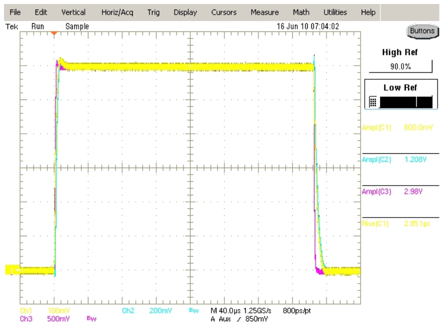
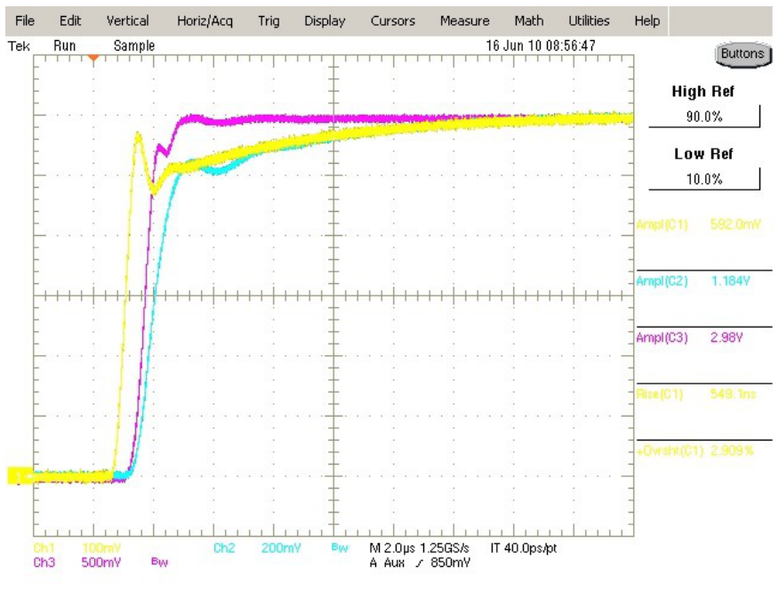
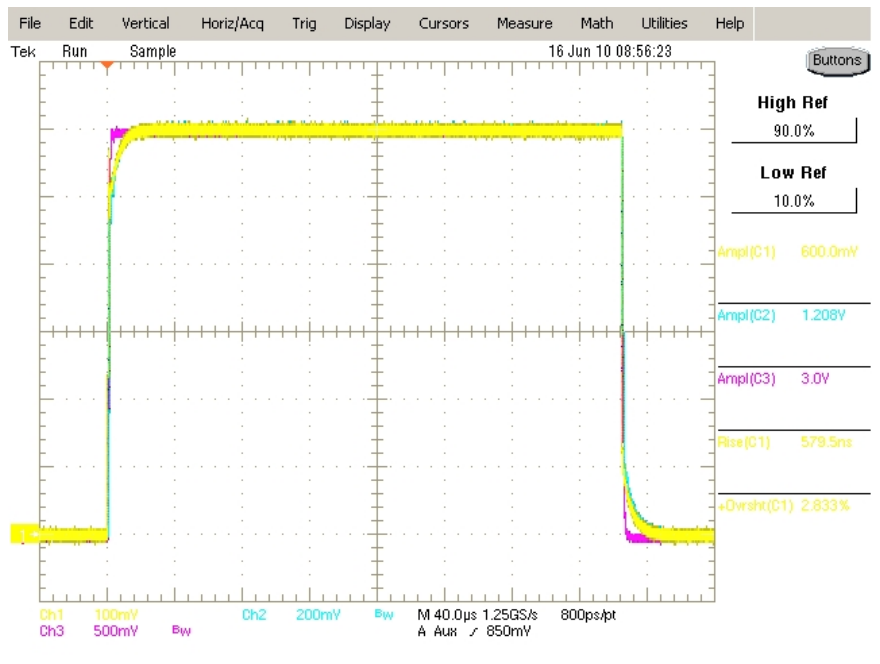
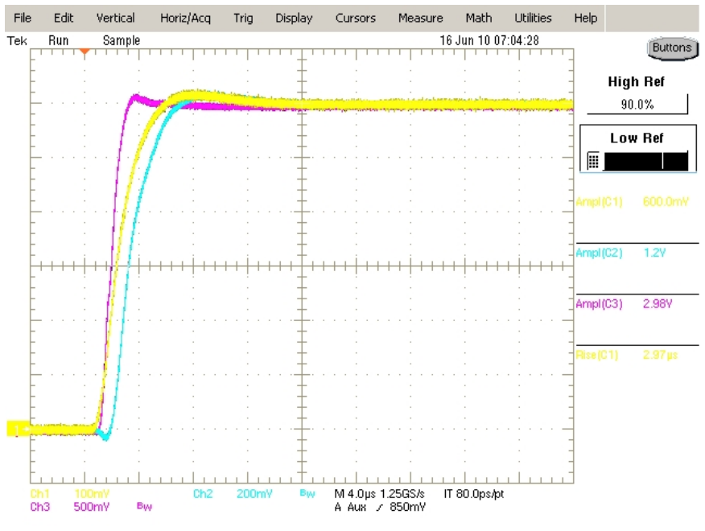
Performance Curves
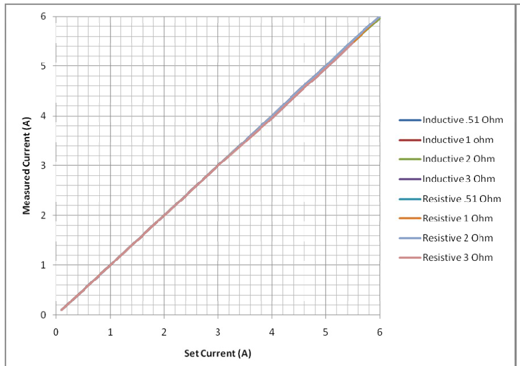
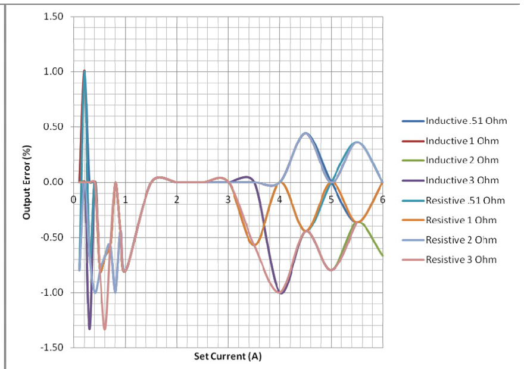
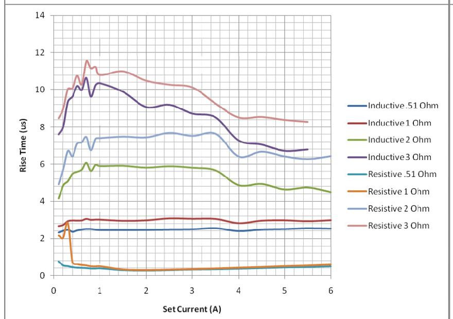
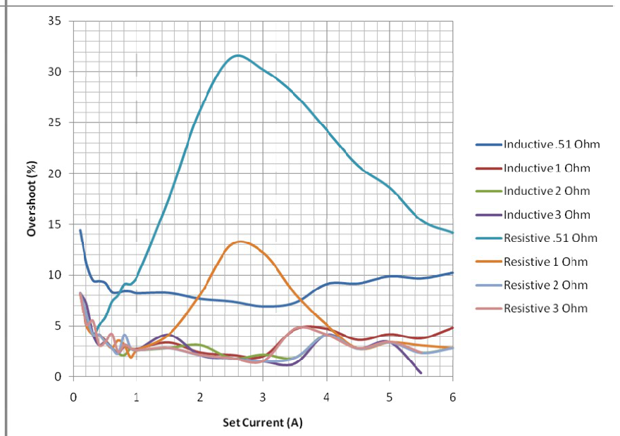
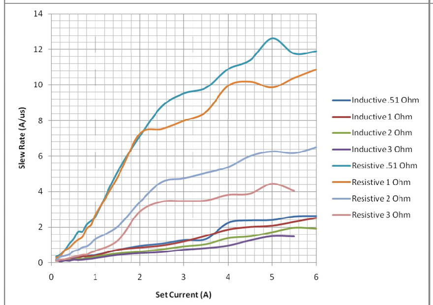
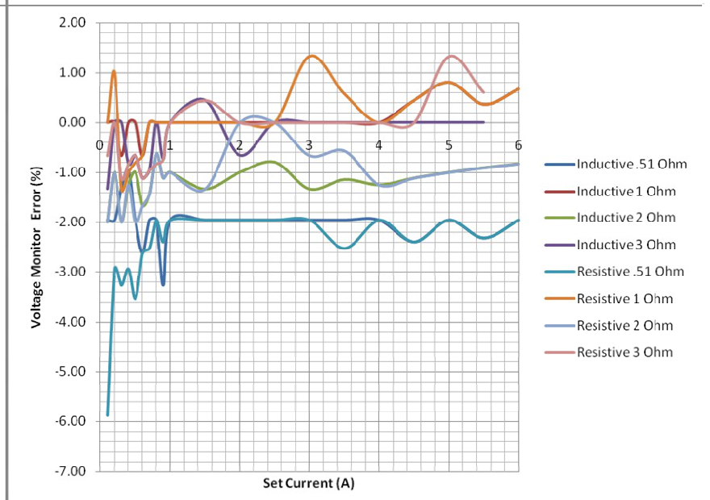
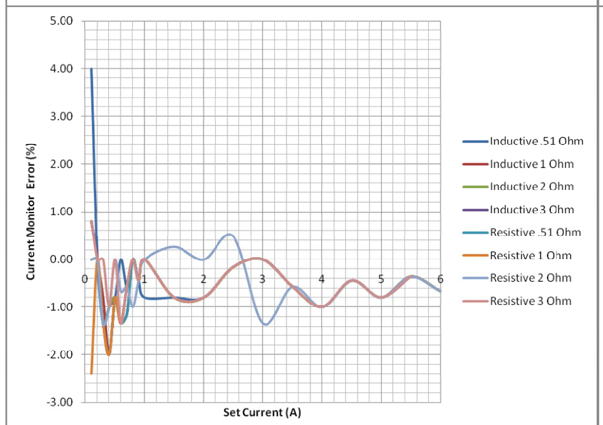
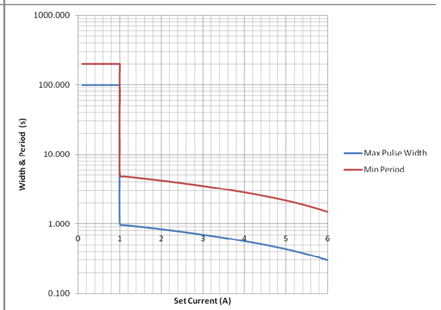
Output Control Circuitry
The output circuitry is designed to handle 30W of power and is firmware limited to prevent overdriving the output circuitry. Figure 12 shows the maximum settable pulse width and minimum settable period at max pulse width. The minimum period is set to 5 times the set pulse width until it reaches the longest settable period of 200s.
Figure 13 is a basic diagram of the output control circuitry for both the current pulse output and the resistance measurement output. The current pulse side has an opamp that controls a high side switching mosfet and receives feedback from a high side current measuring differential amplifier. The control circuit has error checks to measure the controlling amplifiers output voltage, mosfets output voltage, and feedback voltage. If there are any errors with these voltages the output is not allowed to be turned on and the system will display an error.
The resistance measurement side uses a 4-Wire technique where a known current is sent to the load and the voltage is measured to give resistance measurement. The current source consists of a high side opamp for control and output and a high side current measuring differential amplifier as the feedback.
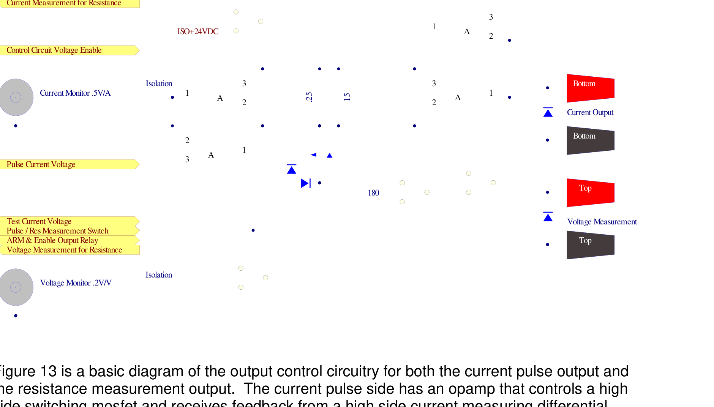
B. Appendix B: Safety Symbols
Safety Marking Symbols
Technical specifications including electrical ratings and weight are included within the manual. See the Table of Contents to locate the specifications and other product information. The following classifications are standard across all BNC products:
- Indoor use only
- Ordinary Protection: This product is NOT protected against the harmful ingress of moisture
- Class 1 Equipment (grounded type)
- Main supply voltage fluctuations are not to exceed 10% of the nominal supply voltage
- Pollution Degree 2
- Installation (overvoltage) Category II for transient over-voltages
- Maximum Relative Humidity: <80% RH, non-condensing
- Operating temperature range of 0 to 40 degrees Celsius
- Storage of transportation temperature of -40 to 70 degrees Celsius
- Maximum altitude 3000m (9843 ft.)
- This equipment is suitable for continuous operation.
This section provides a description of the safety marking symbols that appear on the instrument. These symbols provide information about potentially dangerous situations which can result in death, injury, or damage to the instrument and other components.
Contact Us
Berkeley Nucleonics Corporation
2955 Kerner Blvd.
San Rafael, CA 94901
Phone: (415) 453-9955
Email: info@berkeleynucleonics.com
Web: www.berkeleynucleonics.com
Model 508 User Manual. Document Version Number: 1.2. Print Code: 21027030.